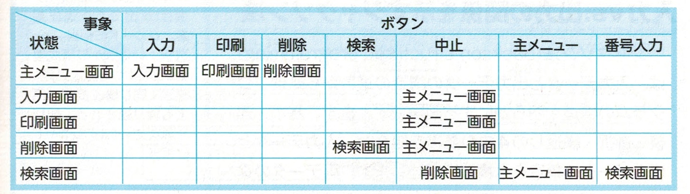
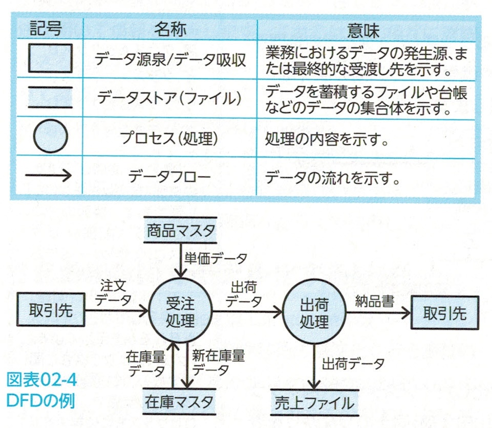
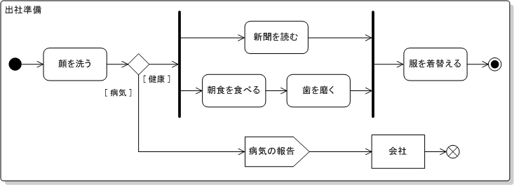
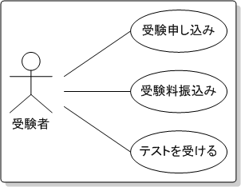
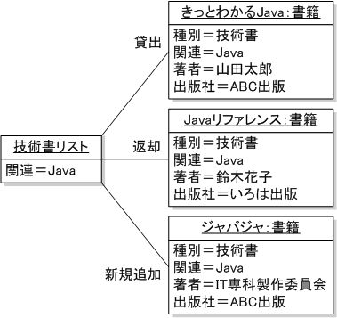
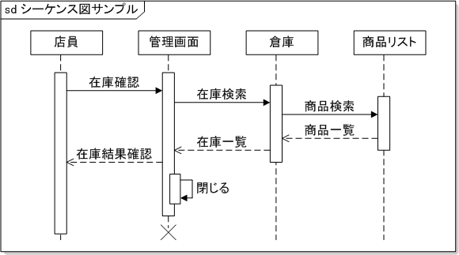

開発プロセス
システム要件定義：ユーザの要求を明確化。
システム方式設計：システム要件を振り分ける。必要なシステム構成を決める。
ソフトウェア要件定義：構築するシステムのソフトウェアについて要件定義を確立する。
ソフトウェア方式設計：内部設計、機能単位のコンポーネントに分割、それらをつなぐインターフェースの仕様、DBの最上位レベルの仕様を設計する。個々のコンポーネントが完成したときにソフトウェア結合テストの仕様を決める。
ソフトウェア詳細設計：前工程で分割したものについて、詳細を設計する。ソフトウェアユニット（クラス、モジュール）のレベルに詳細化、DBの詳細内容、結合テストの仕様書も作成する。
ソフトウェア構築：コーディング、完成したユニットはテストデータを用いてユニットテスト（単体テスト）を行う。
テストおよび移行：完成したユニットは機能単位のソフトウェアに結合し、さらにテスト仕様に基づき、結合テストを行う。そして最後にソフトウェア結合し、システムを完成させる。ここでもテスト（システムテスト）を行う。完成後は移行計画に基づき、旧システムから新システムへの移行作業を行う。
状態遷移図の説明
設計で用いる図式手法はさまざまある。その中に状態遷移図がある。
状態遷移図とは、情報や状態について時間的な移り変わりを図式化する手法です。
状態遷移図による流れを整理するため、状態遷移表を用いることもある。
業務内容を、業務を構成する機能とデータの流れに着目して、モデル化したもの。
UMLで用いる図
UML(Unified Modeling Language: 統一モデリング言語)はOMGによって統一表記法としてまとめられたもの。
アクティビティ図：対象システム全体の処理内容とその流れを表す。
まず朝起きて顔を洗います。健康ならば新聞を読みながら朝食を食べ、歯を磨き、そのあと服を着替えて出社します。もし体調が悪ければ｢病気である｣と会社に連絡して処理終了です。 ユースケース図：システムとその利用者とのやりとりを整理し、利用者の視点でシステムの機能を表す。
ユーザ（受験者）は「受験申し込み」、「受験料振込み」、「テストを受ける」という処理を行っています。 クラス図：システムの構成要素となるクラスの型や属性、クラス間関係など、そのシステムの概念を表現。
オブジェクト図：概念であるクラスを具体化したインスタンス同士のつながりを表現。
シーケンス図：オブジェクトの間に生じるメッセージのやりとりを表現。
このほかにもいろいろとあるので出てきたらその都度覚えてください。
コンポーネント図：オブジェクトの間に生じるメッセージのやりとりを表現。